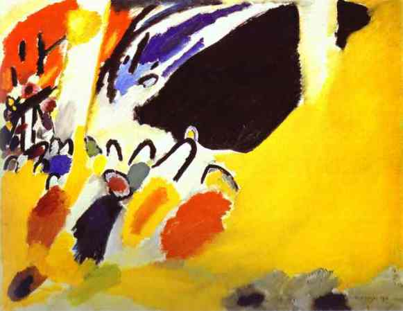

Pretend you are at a museum, and while casually browsing through artworks reflective of 19th century realism, you abruptly stop at Kandinsky’s Impression III. You notice that three main sections of the painting are bathed respectively in dominating hues of red, yellow, and blue. Thin, curved lines are spontaneously scattered among blotches of vibrant colors in the left portion of the painting. A large black shape in the upper right boldly draws your attention, but it seems oddly out of the place among the palette of surrounding colors. You shake your head, confused by the juxtaposition of these strikingly disparate elements, and move on to the next familiar piece.
Pretend you are at a concert, and the pianist performed a spectacular repertoire of pieces by the likes of Chopin, Mozart, and Beethoven. As she lifts her hands to conclude her performance, you expect to hear a familiar, tonal melody, but the music startles you as you hear a chromatic, dissonant line open Schoenberg’s Three Piano Pieces, Opus 11. You attempt to follow the music through transitions of clashing chords, variations in tempos, and mystical lines of melodies, but as soon as you think that you have finally grasped an understanding of the music, the pianist has already taken her bow amidst a final round of applause from the audience. You join in on the clapping, but you are confused, left with no satisfying feeling of closure from the concluding piece of the night.
Upon first glance and first listen, the abstract paintings of Wassily Kandinsky, a Russian painter, and the atonal music of Austrian composer, Arnold Schoenberg appear to be random, cacophonous, and incomprehensible. But bear an open mind, and examine their works, Impressionist III (Konzert) and Three Piano Pieces, Opus 11, again, but together this time. Let us go to Vienna, Austria, where the special exhibition entitled “Schönberg, Kandinsky, Blauer Reiter and the Russian Avantgarde” was held at the Arnold Schoenberg Center from March 9 to May 28, 2000. Here, we can closely study Kandinsky’s Impression III, while we listen to Schoenberg’s Three Piano Pieces, Opus 11, playing in the exhibit. Now you may wonder -- what is so special about putting Kandinsky’s painting and Schoenberg’s music together? Well, allow me to tell you the story of Schoenberg and Kandinsky and how modern art met modern music.
On January 2, 1911 at a concert in Munich, Germany, the Russian painter, Wassily Kandinsky, first encountered the music of Austrian composer, Arnold Schoenberg. At this 1911 concert, Schoenberg’s Three Piano Pieces, Opus 11, was performed. This composition not only exemplifies the composer’s shift from the familiar diatonic tonal system to free atonality, but also showcases his early first steps in understanding and liberation of dissonance in music. Compositions that utilize the diatonic tonal system, such as the well-known works of Mozart, Chopin, and Beethoven, are written in a central major or minor key. Rules in the diatonic tonal system dictate how to combine the seven related notes of the chosen scale to produce restful-sounding harmonies that we would attribute as consonance. To those contemporary listeners acquainted with the thematic sounds of the tonal system, the atonal works that Schoenberg performed in the 1911 Munich concert were received as nothing short of randomness and cacophony. At first listen, it is difficult for today’s listeners to comprehend the complex, yet unique musical structure that arises from Schoenberg’s use of dissonance in his atonal compositions.
However, during the 1911 Munich concert, Kandinsky, who at that time was experimenting with his own novel techniques of art abstraction, found Schoenberg’s atonal works to be striking and appealing. In his first letter to Schoenberg, the letter that would mark the beginning of an intensive, interartistic collaboration between the two men, Kandinsky wrote that “the independent progress through their own destinies, the independent life of the individual voices in your compositions, is exactly what I am trying to find in my paintings.” Kandinsky recognized that he and Schoenberg shared a similar creative intellect: both men believed that rather than conforming to traditional standards of composition, the foundation for a specific work should be structured to its unique context.
So as we continue to analyze Kandinsky’s Impressions III in the exhibit in the background of Schoenberg’s Three Piano Pieces, Opus 11, let us ponder what Kandinsky meant by “the independent life of the individual voices” in Schoenberg’s compositions. In his Theory of Harmony, in which the composer describes his principles for atonal music theory, Schoenberg discusses how it is the difference in degree, and not in the kind, of overtones that create the subconscious impressions that listeners associate with sound. Overtones closer to the fundamental tone produce the stronger, more dominant sounds that listeners associate with restful consonance, while the more remote overtones are less perceptible and produce the stranger sounds that listeners associate with dissonance. Because of this reasoning, he treated both consonance and dissonance as natural and acceptable. In terms of composition, Schoenberg believed that chords can be formed from any combination of the twelve semitones that make up the chromatic scale. Furthermore, those chords could stand independently, and when used together, could form harmonies that would not only transcend the regiment of the traditional tonal system, but also possess the characteristic that Kandinsky attributed to as “independent life.”
Let us shift our attention away from Kandinsky’s Impressions III, and listen closely to Schoenberg’s Three Piano Pieces, Opus 11, as Schoenberg’s radical developments in compositional theory are clearly evident in this piece. Each of the three movements possess their unique characteristics, and therefore, the music should be perceived in the context of each individual movement. In the first piece Massig, we can hear the blend of dissonance and consonance producing mysterious melodies among playful interchanges of sporadic chords and chromatic glissandos. The composition seems to tease us with the alluring sounds of dissonance and attempts to lure us out of our tonal comfort zone. In the second movement, also titled Massig, the shift to a slower tempo enables us to clearly distinguish the identity of each sound in each seemingly disparate and independent passage, yet we still recognize the continuity of the number as established by the harmonious balance of dissonant transitions. The third piece Bewegt sounds the most discordant of the three as the piece rapidly progresses through layers of chromatic chords. In addition, the dissonant conclusion of the piece does not provide us with closure in any traditional musical sense. We know that the piece has ended, and the end makes sense. But we still feel disoriented, as if the gravity that holds us to the stable ground of tonality has ceased to exist and the music that we thought had ended continues to play in the unknown beyond.
With an understanding of Schoenberg’s atonality, let us proceed back to examining the musical influence on Kandinsky’s Impressions III. To the artist, Schoenberg’s use of atonality was aesthetically congruent to his own pursuits in visual abstraction. He admired how Schoenberg breathed individual life to the various sounds heard throughout a single composition, yet was able to effortlessly meld the different voices into a unified and harmonized structure unique to the piece. Kandinsky incorporates Schoenberg’s principles of dissonance into his abstract paintings, effectively demonstrating that an alternative perception of harmony can be created from the interactions of opposite colors and disproportionate forms.
In Impressions III, Kandinsky does not seek to capture the reality of the 1911 Munich concert but rather his direct, personal impression of a musical performance. The blue and red background shows us that we are in a grand chamber or concert hall filled with masses of people. A dominant black shape is recognized as the piano on stage, and a multitude of boldly colored figures and curved black lines as the audience sitting in the front-row. Through Kandinsky’s use of flow and directionality in his placement of colors and shapes, our visual focus is always drawn towards the piano, perhaps serving to highlight not only the significance of Schoenberg’s musicality on the painter’s artistry but also Kandinsky’s excitement of discovering an aesthetic counterpart in Schoenberg during the evening of the 1911 Munich concert. In addition, a bright yellow foreground engulfs the piano and audience, conveying an ambience of warmth and peacefulness that blends music and listener into one.
After a close examination of Kandinsky’s Impression III and Schoenberg’s Three Piano Pieces, Opus 11, we can slowly begin to appreciate the relevance of music’s influence on art in our understanding of the development of modernism in the early twentieth century. In Schoenberg’s case, atonality, the absence of a central key, enabled the composer to innovate a novel, dissonant harmony that utilized the twelve tones of the chromatic scale. For Kandinsky, Schoenberg’s influence on the painter led him to strive for new forms of compositional harmony in painting through the juxtaposition of contraposing forms and colors. In a letter during their period of intensive, interartistic collaboration, Schoenberg wrote to Kandinsky that “art belongs to the unconscious,” and this phrase captures the theme of expressionism and the musical influences on the artworks presented in the exhibit at the Arnold Schoenberg Center.
The paintings on display belong to the group called Blauer Reiter, or the Blue Riders, known for their avant-garde pursuits in expressionism and their emphasis on meaningful experiences through the evocation of ideas and emotions. Both Schoenberg and Kandinsky were members of the Blue Riders, and the works that we have just examined, Schoenberg’s Three Piano Pieces, Opus 11, and Kandinsky’s Impressionism III, comprise the nucleus of Arnold Schoenberg Center exhibit. It delineates the deep, intellectual relationship that arose between the two men, and the flow of radical ideas and concepts in art and music composition exchanged during their period of intensive collaboration. In addition, the exhibit likens the abstraction produced by the interplay of free-standing colors, shapes and forms to the suspension of tonality that results from the independence of dissonant sounds. In particular, artistic elements in Kandinsky’s Impressions III (Konzert) not only reflects the musical styles in Schoenberg’s Three Piano Pieces, Opus 11, but also represents the artistic reaction of a painter so moved by the ideas of a composer.
Schoenberg’s musical influence on Kandinsky’s artistry demonstrates how a radical shift in music composition from the diatonic tonal system to free atonality catalyzed a heavy change in artistic composition from the objective depiction of physical reality to the subjective expression of emotion and ideas. The seemingly unified structures that result from the the placement of idiosyncratic forms in the artistic realm, as evident in the paintings of Kandinsky, parallels the redefined harmonies born from spontaneous and independent lines of dissonance in the musical realm, as evident in the compositions of Schoenberg. In essence, the aesthetic exchanges between Schoenberg and Kandinsky, and the resultant intertwining movements of abstraction in art composition and atonality in music composition, planted seeds for the growth and development of modernist ideals that we have come to appreciate today.
Note: A visual and auditory experience of this essay is published on Medium.
Sources Cited:
Annis, Shannon M. "Kandinsky's Dissonance and a Schoenbergian View of Composition VI." Graduate School Theses and Dissertations, 1 June 2008. Web.
Bagust, Sue. "Beyond Fission Schoenberg, Kandinsky, the Blaue Reiter and the Russian Avant Garde." Central Europe Review, 25 Apr. 2000. Web.
Gottdang, Andrea. "Impressions III (Concert)." See This Sound, n.d. Web.
Meyer, Christian. "Concept for the Exhibition "Schönberg, Kandinsky, Blauer Reiter and the Russian Avant-garde – Art Belongs to the Unconscious"" Arnold Schoenberg Center, Mar. 2000. Web.
Smith, Roberta. "ART REVIEW; Kandinsky and Schoenberg, Seen and Heard on Canvas." The New York Times, 24 Oct. 2003. Web.
Tommasini, Anthony. "Unraveling the Knots of the 12 Tones." The New York Times, 14 Oct. 2007. Web.